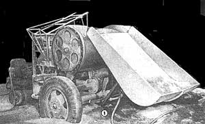
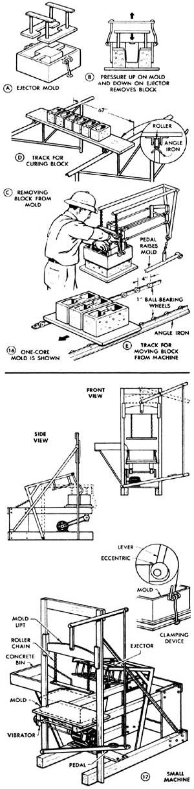
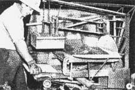
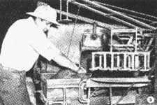
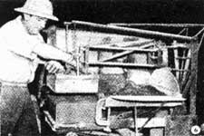
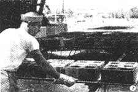
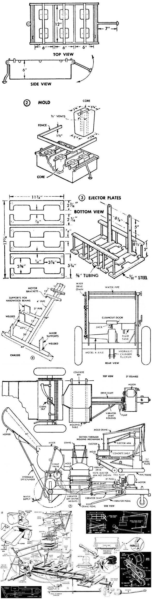

This article reprinted by permission from Popular Mechanics. Copyright © 1946, The Hearst Corporation.
If you've never heard of Hi Sibley, you should have. Because back in the mid40's Hi was living-and writing about-more of a MOTHER-type life than most MOTHER readers live today. Do-ity-ourself adobe houses, "organic" gardening, homestead bees, and a hundred other back-to. basics projects . . . ole Hi and his wife did 'em themselves and then published the results of their work in a good dozen magazines of the day. The following Hi Sibley article originally appeared in a 1946 issue of Popular Mechanics ... but it's just as timely and valuable to any self-reliant home. steading family now as it was then.
That's right! 100 blocks per hour . . . provided you have the help and the space and racks to cure the blocks properly. In Fig. 1 you see the outfit complete, ready for work. It's a self-contained unit mounted on its own two-wheeled, pneumatictired trailer with a supporting caster wheel under the drawbar. There's nothing to take apart and put together again when you move the machine. Merely disconnect the water hose and the power line, hitch it to a truck, and away you go.
Figs. 4 to 7 inclusive show how it works. Fig. 2 details the metal mold and Fig. 3 the ejector plates and assembly. In Fig. 4 the mold, supported by a crane, is being lowered into place on the molding "board", in this case a steel plate somewhat larger than the mold. In Fig. 5 the mix is being scraped and troweled into the mold. When full the mold is vibrated by means of a footoperated take-off drive, and then the excess material is struck off the top with the fence or striker board. Next, the crane is hooked to the mold and the ejector is swung into place. In Fig. 6 the operator bears down on the ejector and simultaneously presses a foot pedal to raise the mold off the formed blocks. In Fig. 7 the finished blocks are being moved to the curing racks.
Fig. 8 shows the main frame, entirely a welded job using 3- and 4-inch pipe, steel plate, and steel channel. Only general dimensions are given as some of these parts must be sized to fit during the assembly of other parts of the machine. With the exception of the motor, which is only a representation, the crosshatched views in Fig. 9 are intended to give a general guide to proportionate sizes of the machine parts and their relative positions. To make the manner of assembly more clear, certain parts have been omitted from these details. No detailed dimensions have been given in Fig. 9 because these will vary somewhat according to the materials and parts which you have or which are available.
Figs. 10 to 15 inclusive show the assembly. From these details you will see first that the main drive from the motor to the mixing chamber is made from a Ford Model-A rear axle and drive shaft, (Fig. 11). One axle housing is removed and the open end of the differential housing is covered with a sheet-metal disk bolted on with a gasket between to prevent leakage of lubricant. A roller-chain drive sprocket is welded or keyed to the axle and a two-step V-pulley is attached to the drive shaft. The drive thus formed from this unit is welded to the trailer frame at three points: at the end of the Model-A axle housing where it passes through a hole in the mixing-drum bracket, and at the differential and the forward end of the drive-shaft housing, where it also is supported on brackets.
The hopper, Fig. 10, and the mixing drum are made of heavy sheet metal welded at all joints and reinforced with steel angles welded on as stiffeners wherever large areas of the metal are subjected to severe strain. The steel mixing blades of the agitator, Fig. 9, the top view, have a clearance of about 3 inches inside the drum.
Figs. 13 and 14 and the two upper views in Fig. 11 detail the crane and ejector arm. The crane is an allwelded assembly of standard rod and pipe sizes and is operated by a pedal which extends underneath the machine. However, the ejector mechanism is a somewhat more intricate affair. The ejector plates must raise and lower in the same plane, making two pairs of adjustable parallel arms necessary. A "helper" spring eases the lift of the assembly and another coil spring swings it to one side. Bearings at both ends of the four arms should fit accurately. Fig. 11 shows the frame which supports the crane and ejector.
The hopper is raised for dumping by a hydraulic cylinder, Fig. 11. Arrangement of the hydraulic system is shown in Fig. 12 and the drive to both the hydraulic pump and the mixer is detailed in Fig. 15. Raising and lowering of the hopper is controlled by a three-way valve, Figs. 11 and 12. By-passing the hydraulic fluid allows the pump to be operated continuously, thereby simplifying the drive. The vibrator shaft, Fig. 15, is pedal-operated and runs only when the pedal is depressed. One belt from the two-step cone pulley passes around an idler. The pulley driving the vibrator is located between the driving pulley and the idler as shown in Fig. 15. When the pedal is depressed the center pulley engages the belt, and "throw" of the off-center weights, Fig. 11, vibrates the mold. The mold must be held rigidly in place for this operation and Fig. 11-A details the quick-acting clamping device especially made for this purpose.
The mold and the ejector, Figs. 2 and 3, are made for three blocks. There are two cores in each compartment of the mold and note especially that each core is vented (Fig. 2) and tapered slightly so that it will draw easily without breaking the edges of the block. Cores can be cast from a rich cement-sand mixture or they can be made of heavy sheet metal, welded. Where facilities and materials are available, they also could be cast from aluminum.
Fig. 16, details A to E inclusive, shows a one-core mold (A and B) which is suitable for certain special types of blocks. Detail C supplements Fig. 6 and shows more clearly the procedure and placement of the hands in ejecting the block from the mold, while details D and E suggest types of elevated tracks or rails for moving blocks away from the machine and to the curing yard, as in Fig. 7. Curing racks of any convenient size may be assembled from hardwood boards, steel angles, and flanged rollers as in Fig. 16-D. Detail E suggests one way of providing for easy handling of the blocks from the machine to the curing racks.
General assembly views of a hand-operated machine for making a few blocks at a time are given in Fig. 17. Here most of the work is done by hand, only the vibrator being motor driven. It's easy to build for either a one-, two-, or threeblock mold. Proportions of the mix which have been found most satisfactory are 7 parts pea gravel, 12 parts sharp sand, 2 parts silt, and 2-1/2 parts portland cement. The amount of water is determined by experiment as it depends on the dampness of the aggregate.
|
 Designed and built by Lemuel E. Shaw of California this highly productive machine has been producing 800 blocks daily with one operator and a helper |
 First step is placing the molding ""board"" on the vibrator arms. Some material from the discharge door of the mixer is on the platform above the mold, which is still supported in the raised position. |
 Here the mold has been lowered and locked, the crane released and ejector swung aside. Operator is filling mold. After filling and vibrating the mold, the material is struck off flush with the top. |
|
 Next, crane is attached to mold and the ejector swung into position. Holding the ejector down, operator depresses a pedal, lifting the mold. Then after moving the blocks, the process is repeated. |
 Here's the final step . . . moving blocks to the curing yard on racks especially designed for the purpose. It usually is best to cure blocks in shade. They should not be handled until cured thoroughly. |
 |
|
 |
|
|